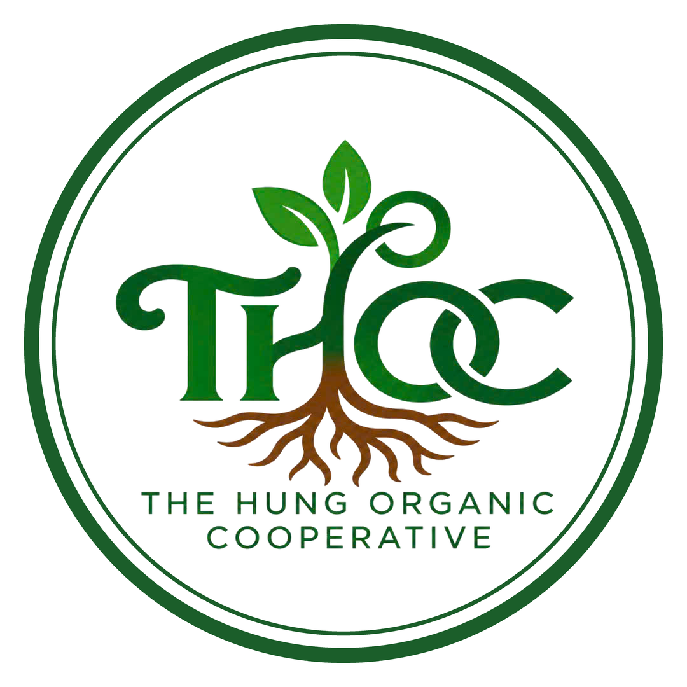
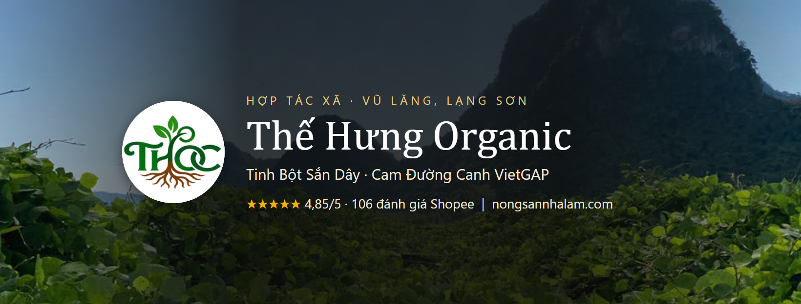
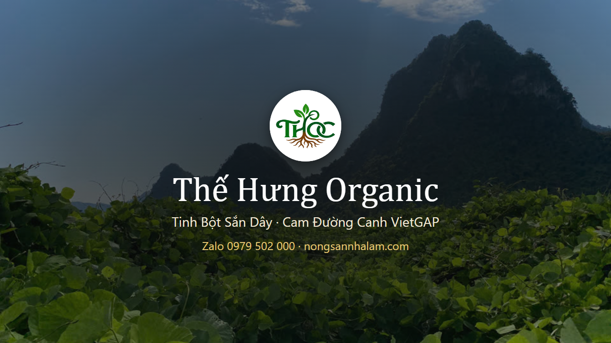
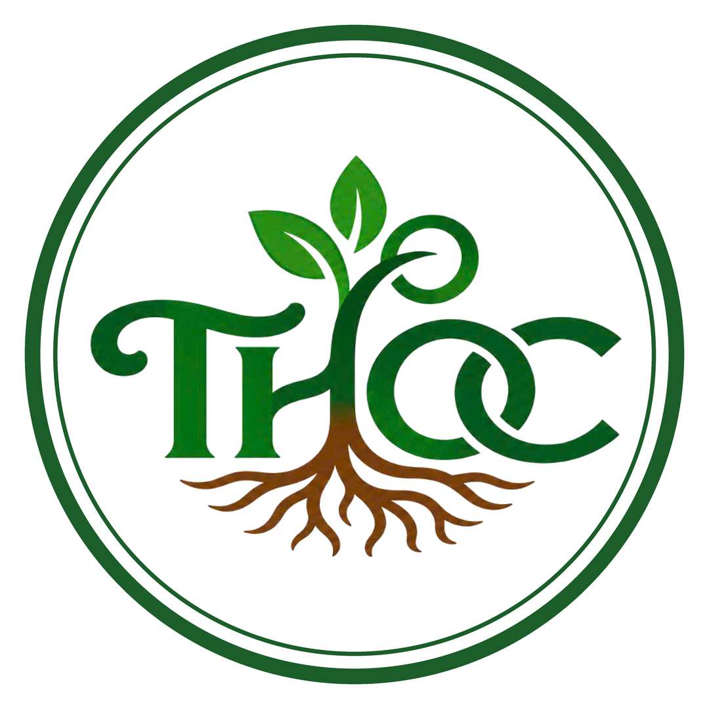
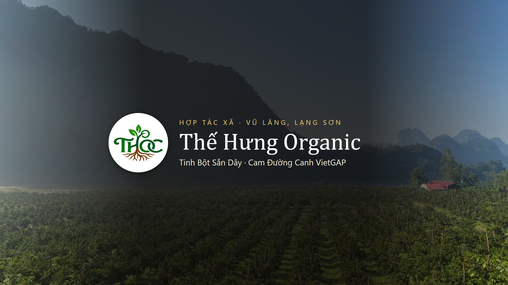
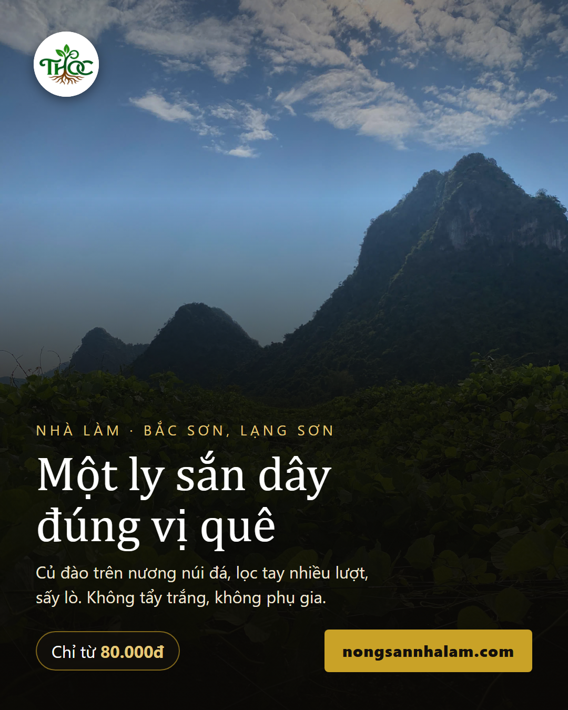
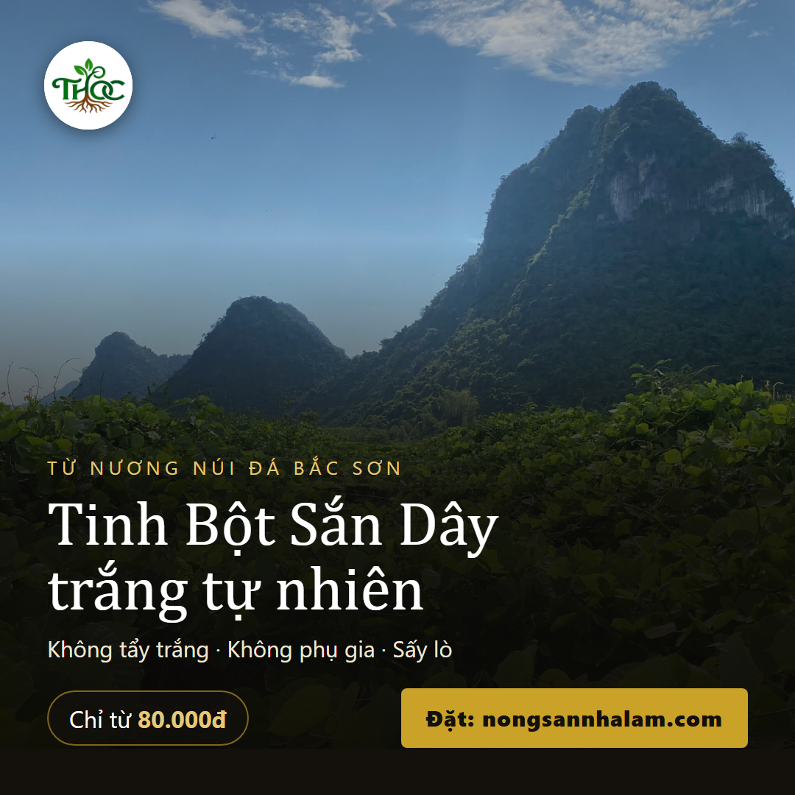
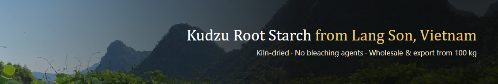

Đăng ký & dựng hồ sơ 6 kênh
Thế Hưng Organic · soạn 01/11/2026 · mỗi ô có nút Chép, bấm rồi dán vào ứng dụng. Số ký tự hiện cạnh từng ô.
0. Chuẩn bị chung (5 phút)
- Thứ tự nên làm: Facebook → Instagram (nối với Facebook) → TikTok → YouTube → LinkedIn → Zalo. Mỗi ngày làm 2–3 kênh là đủ, không cần làm hết 1 lúc.
- Tên tài khoản dùng chung:
thehungorganic. Tôi đã kiểm tra lúc soạn: YouTube và LinkedIn còn trống; TikTok và Instagram không kiểm tra được từ máy tính. Nếu kênh báo đã có người dùng, đổi thànhthehungorganic.vnvà dùng y như vậy ở mọi kênh còn lại. - Chuyển ảnh sang điện thoại: TikTok và Instagram làm trên điện thoại. Mở thư mục
content/kenh_assets/trên máy tính, gửi 3 ảnh logo tròn + các ảnh bìa vào Zalo → Cloud của tôi, rồi lưu về điện thoại. - Bảo mật: kênh nào cũng bật xác minh 2 bước ngay sau khi tạo. Ghi mật khẩu vào sổ, không lưu trong tin nhắn.
- Email dùng cho các kênh:
hello@thehungorganic.com(ô “email liên hệ”). Riêng YouTube đăng ký bằng Gmail của bạn.
1. Facebook — Trang Kênh bán chính
Bước 1: kiểm tra trang hiện có
Mở facebook.com/profile.php?id=61593265823967 trên điện thoại.
- Thấy nút Thích / Theo dõi, có mục “Trang · …” → đây là Trang. Bỏ qua Bước 2, sang Bước 3.
- Thấy nút Thêm bạn bè → đây là trang cá nhân mang tên thương hiệu. Facebook có thể khoá loại này vì không dùng tên thật. Làm Bước 2.
Bước 2 (chỉ khi là trang cá nhân): tạo Trang từ Facebook thật của bạn
- Đăng nhập Facebook tên thật của bạn → Menu (☰) → Trang → Tạo.
- Tên Trang và hạng mục: chép ở dưới. Hạng mục gõ “Trang trại”, chọn thêm “Thực phẩm & đồ uống” nếu cho chọn 2.
- Xong thì để trang cá nhân cũ nằm yên, không đăng gì nữa. Báo tôi link Trang mới để thay trên web.
Bước 3: điền hồ sơ Trang
Thế Hưng Organic
thehungorganic
Sắn dây & Cam Đường Canh VietGAP từ Vũ Lăng, Lạng Sơn. Không hoá chất tẩy trắng. Giao toàn quốc.
https://thehungorganic.com
0979502000
hello@thehungorganic.com
Vũ Lăng, Lạng Sơn, Việt Nam
- Nút hành động: chọn Gửi tin nhắn (khách nhắn Messenger đặt hàng).
- Ghim bài đầu: đăng bài “Ra mắt website” (
dot-1_2026-10/01_website-moi) rồi bấm ⋯ → Ghim lên đầu.

Ảnh đại diệnlogo-tron-day-du-1080.png

Ảnh bìabia-facebook-1640x624.png
2. Zalo Chốt đơn
Dùng Zalo số 0979 502 000 đang có. Chỉ cần thay ảnh và lời giới thiệu: Zalo → Cá nhân → bấm vào tên → ⋯ → Thông tin / Đổi ảnh đại diện / Đổi ảnh bìa.
Thế Hưng Organic · Sắn dây & Cam Đường Canh Lạng Sơn · Giao toàn quốc · thehungorganic.com
logo-tron-day-du-1080.png

Ảnh bìabia-zalo-1280x720.png
3. TikTok Kéo khách mới
- Tải ứng dụng TikTok → Hồ sơ → Đăng ký bằng số điện thoại của shop.
- Hồ sơ → Sửa hồ sơ: điền tên, tên người dùng, tiểu sử, ảnh (chép ở dưới).
- ☰ → Cài đặt và quyền riêng tư → Tài khoản → Chuyển sang Tài khoản doanh nghiệp → hạng mục Thực phẩm & Đồ uống.
- Trong Sửa hồ sơ, nếu có ô Trang web thì dán link bên dưới. Nếu chưa có ô này (TikTok đôi khi chỉ mở sau khi có người theo dõi), cứ để chữ thehungorganic.com trong tiểu sử là đủ.
- 3–5 ngày đầu “làm nóng”: mỗi ngày dành 10 phút xem, thả tim, bình luận thật vào video về sắn dây, nông sản Lạng Sơn, cam. Chưa gắn link trong bài.
- Video đầu tiên (sau khi làm nóng):
dot-1_2026-10/02_cach-pha/video.mp4, chữ lấy ở mục TikTok trongnoi-dung.txtcùng thư mục.
Thế Hưng Organic
thehungorganic
Sắn dây & cam Lạng Sơn 🌿 Zalo 0979502000
https://thehungorganic.com/?utm_source=tiktok&utm_medium=social&utm_campaign=bio

Ảnh đại diệnlogo-tron-vien-1080.png
4. YouTube Shorts, dùng lại video TikTok
Làm trên máy tính cho dễ (ảnh bìa lớn).
- Vào
youtube.com, đăng nhập Gmail của bạn → ảnh đại diện góc phải → Tạo kênh. - Tên và mã định danh (handle): chép ở dưới. Handle
@thehungorganicđang trống. - Vào
studio.youtube.com→ Tuỳ chỉnh → tab Hồ sơ: ảnh đại diện, ảnh biểu ngữ, mô tả, đường liên kết, email liên hệ. - Cài đặt → Kênh → Quốc gia: Việt Nam; Từ khoá: chép ở dưới.
- Xác minh số điện thoại tại
youtube.com/verify(để được đổi ảnh bìa video). - Đăng Shorts: các video trong
dot-1_2026-10/, tiêu đề + mô tả lấy ở mục YouTube Shorts trongnoi-dung.txt.
Thế Hưng Organic
thehungorganic
Video thật từ nương sắn dây và vườn Cam Đường Canh của Hợp tác xã Thế Hưng Organic ở Vũ Lăng, Lạng Sơn: đào củ, nghiền lọc, sấy, đóng gói, hái cam. Tinh Bột Sắn Dây không hoá chất tẩy trắng, không phụ gia. Cam Đường Canh vườn đạt VietGAP, chín trên cây mới hái. Đặt hàng: thehungorganic.com · Zalo 0979 502 000 · Giao toàn quốc.
https://thehungorganic.com/?utm_source=youtube&utm_medium=social&utm_campaign=bio
https://zalo.me/0979502000
hello@thehungorganic.com
tinh bột sắn dây, sắn dây Lạng Sơn, cam đường canh, cam Lạng Sơn, nông sản Lạng Sơn, Thế Hưng Organic
logo-tron-day-du-1080.png

Ảnh biểu ngữbia-youtube-2560x1440.png
5. Instagram Phụ, đăng chung với Facebook
- Tải ứng dụng Instagram → Tạo tài khoản mới bằng email
hello@thehungorganic.com. - Điền tên, tên người dùng, tiểu sử, ảnh (chép ở dưới).
- ☰ → Loại tài khoản và công cụ → Chuyển sang tài khoản chuyên nghiệp → Doanh nghiệp → hạng mục gõ “Trang trại” hoặc “Thực phẩm”. Bật “Hiển thị trên trang cá nhân”.
- Khi hỏi nối với Facebook: chọn Trang Thế Hưng Organic (chỉ nối được khi đó là Trang, xem mục 1).
- Thêm liên kết (Sửa trang cá nhân → Liên kết → Thêm liên kết ngoài): chép ở dưới. Tuỳ chọn liên hệ: số 0979502000 + email.
- Đăng sẵn 3 bài để trang không trống khi khách ghé: ảnh
bai-doc-san-day-1080x1350.png, ảnhqc-vuong-san-day-1080.png, và video01_website-moi. Từ bài sau, đăng từ Facebook và bật “Chia sẻ lên Instagram”.
Thế Hưng Organic
thehungorganic
Sắn dây & Cam Đường Canh từ Vũ Lăng, Lạng Sơn 🌿 Không hoá chất tẩy trắng · Cam VietGAP · Zalo 0979 502 000
https://thehungorganic.com/?utm_source=instagram&utm_medium=social&utm_campaign=bio
logo-tron-vien-1080.png

Bài 1
Bài 26. LinkedIn — Trang công ty Cho khách sỉ / xuất khẩu
Làm trên máy tính. Cần có tài khoản LinkedIn cá nhân tên thật trước (LinkedIn không cho tạo trang công ty từ tài khoản mang tên thương hiệu). Chưa có thì tạo bằng tên thật của bạn, ghi chức danh “Founder” hoặc “Sales” tại The Hung Organic Cooperative.
- Vào
linkedin.com/company/setup/new→ chọn Company. - Điền các ô chép ở dưới. Quy mô: chọn đúng số người thật của HTX. Loại tổ chức: Privately held.
- Sau khi tạo: Edit page → thêm cover, About, Location, Tagline.
- Bài đầu tiên: dùng bài
dot-1_2026-10/09_ban-si-xuat-khau. Sau đó 1 bài/tuần là đủ.
The Hung Organic Cooperative
thehungorganic
https://thehungorganic.com/en/wholesale.html
Food and Beverage Manufacturing
Kudzu root starch from Lang Son, Vietnam. Kiln-dried, no bleaching agents. Wholesale & export from 100 kg.
The Hung Organic Cooperative produces kudzu root starch in Lang Son, Vietnam: washed, ground, filtered and kiln-dried at our own facility, with no chemicals or bleaching agents. Around 10–20 tonnes a month. Wholesale and export from 100 kg. Spec sheet: thehungorganic.com/en/wholesale.html Email: hello@thehungorganic.com · WhatsApp +84 363 589 920
Vu Lang, Lang Son, Vietnam
logo-tron-day-du-1080.png

Coverbia-linkedin-1128x191.png
Xong rồi thì
Gửi tôi link các kênh vừa tạo (Facebook Trang, TikTok, YouTube, Instagram, LinkedIn). Tôi sẽ:
- Gắn biểu tượng các kênh vào chân trang cả 23 trang web + khai báo cho Google biết đây là kênh chính thức.
- Dựng phần nhắc đăng bài hằng ngày (Telegram + Notion) và hẹn giờ theo tuần cho Thế Hưng Organic, giống 2 site Ranker.